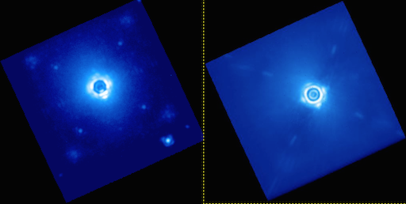

See also
Further information may be found in Wang et al. 2014 “Gemini Planet Imager Observational Calibrations VIII: Characterization and Role of Satellite Spots”
The four satellite spots, which are replicas of the occulted central star, in each coronagraphic image are created from a grid that has been imprinted on the pupil plane masks (for more details see Macintosh et al. ‘The Gemini Planet Imager: from science to design to construction’, 2008, Proc. SPIE vol. 7015). These spots sit at the edge of the dark hole and are designed to be used for both determining the position of the occulted star, measuring the spectrum of the central star (in spectral mode). The satellites are also present in polarimetric data, but are seen as long oval shapes due to their chromaticity.
The use of the satellites as a measurement of the central star position in both spectral and polarimetric modes gives stellar positions with an uncertainty of ~0.2 pixels (~3 mas). Within an individual exposure, users may experience smaller errors, however the error bar quoted here includes a systematic error component that was encountered when comparing several observations. Investigation into this error is ongoing.
The use of these spots for photometric calibration has been challenging for several reasons. Nominally, the mask was designed to produce identical spots whose intensities were approximately 10000 times fainter than the primary star (star:satellite flux ratio of 1e-4). Lab measurements have shown the star:satellite flux ratio is to be closer to 2e-4 is not constant between observations. Reasons for this are unclear and work into determining their stability is ongoing. The most recent star:satellite flux ratios are found in the pipeline/config/apodizer_spec.txt file.

To date, we see no evidence of variability in the satellite spectra, therefore using the satellites as a relative spectrophotometric calibrators is an acceptable practice. Difficulty in working with the satellite spots also arises from the diagonal spot pairs having slightly different PSFs. Because it is not possible to obtain an unocculted image of the star simultaneously with the satellites, comparison between the 5 PSFs is challenging. During comissioning, non-simultaneous observations have been performed and analysis is ongoing.
The satellite spots are used by the pipeline to measure the central position of the star and subsequently perform a measure of contrast. Their locations are found using the pipeline primitive Measure satellite spot locations. The primitive uses an algorithm to find the spots that is described in detail in section 4 of the Savransky et al (2013) Applied optics paper.
For some images, particularily images with very strong halos and/or very low signal-to-noise in the satellite spots, the algorithm will fail. When this occurs the user has four levels of intervention to help remedy the situation. The first is to modify the search_window parameter from the recipe editor. Expanding this to larger numbers will sometimes allow convergence with zero impact on the processing time. The user can also apply a constraint on the distance between the satellite spots according to their wavelength, this is accomplished using the constrain parameter. A more robust method is to high-pass filter the image prior to running the algorithm. This is accomplished by modifying the highpass parameter, which declares the size of the side of median box filter. A box size of 15-25 is generally recommended. Note that this will provide a noticable reduction in the processing speed (~10 seconds per image). Lastly, the user can input the coordinates manually using the loc_input and x1,y1,x2,y2,x3,y3,x4,y4 parameters and the reference_index for these values.
The positions of the satellites are stored in the science header for later use by other primitives.
In polarimetry mode, the location of the satellite spots are not currently found explictly, although this hopefully will be done in the future. Instead, the pipeline primitive Measure Star Position for Polarimetry uses a radon transform technique and the fact that all four elongated satellite spots point toward the center to locate the occulted star (see upcoming SPIE paper about satellite spots for deatils).
In our current anaylsis of the data, this technique seems to be sufficient for locating the central star: both spectral mode and polarimetry mode uncertainty is dominated by systematic errors. However, the radon technique takes into account the whole image and is sensitive to noise/bright objects. There are a few techniques to make this procedure stable. First, the primitive requires a guess for the occulted star position and a search radius around the inital guess position. This limits the search algorithm and for the most part gives very good precision. Occasionally, a pixel value floor needs to be set using the lower_threshold parameter to remove any extremely negative pixels which sometimes appear around the border of the image. Lastly, it is important to mask out any bright sources that are brighter than the satellite spots. The primitive already masks out the halo of the central star, but if there are any bright companions in the image, they should be manually masked out also.
There is currently no pipeline primitive to measure the satellite spot fluxes or contrats in polarimetry mode. This has not been calibrated yet and will be done in future work.
Occasionally, the algorithm will falsely claim to have found the satellite spots. Users should check the headers of at least one image in their stack to ensure the proper spot locations have been determined. Generally, if the spot locations are incorrect it is relatively apparent when looking at any extracted spectra, or sometimes even when scrolling through the cube slices.
As mentioned previously, the star:satellite flux ratio has been observed to vary between observations. Any absolute calibration will be subject to unquantified uncertainty. It is suggested that users proceed with their science using non-flux calibrated spectra.
Data taken with the atmospheric dispersion corrector (ADC) out suffers from atmospheric differential refraction (ADR) effects. The ADR effect smears out the star/companions over ~1 pixel (dependening on zenith angle). In spectral mode, the optimal way to account for it currently is to measure the star position in each individual frame using the satellite spots. In polarimetry mode, there is currently no way of correcting for ADR. All early science data should have been taken with the ADC, therefore leftover ADR effects should be small. However, GPI team members working with early commissioning data should account for ADR effects.
Warning
Note that the DRP measures satellite spots using IDL’s array indexing convention, such that the first pixel is (0,0) and NOT (1,1,). This is different from the convention adopted by FITS files, but we stick with the IDL convention anyway when writing the DRP coordinates to the FITS headers. If you want to use these coordinates in some other software, be sure that you are aware of the appropriate indexing convention.
Patrick Ingraham, Jason Wang, Dmitry Savransky
{kind=link}